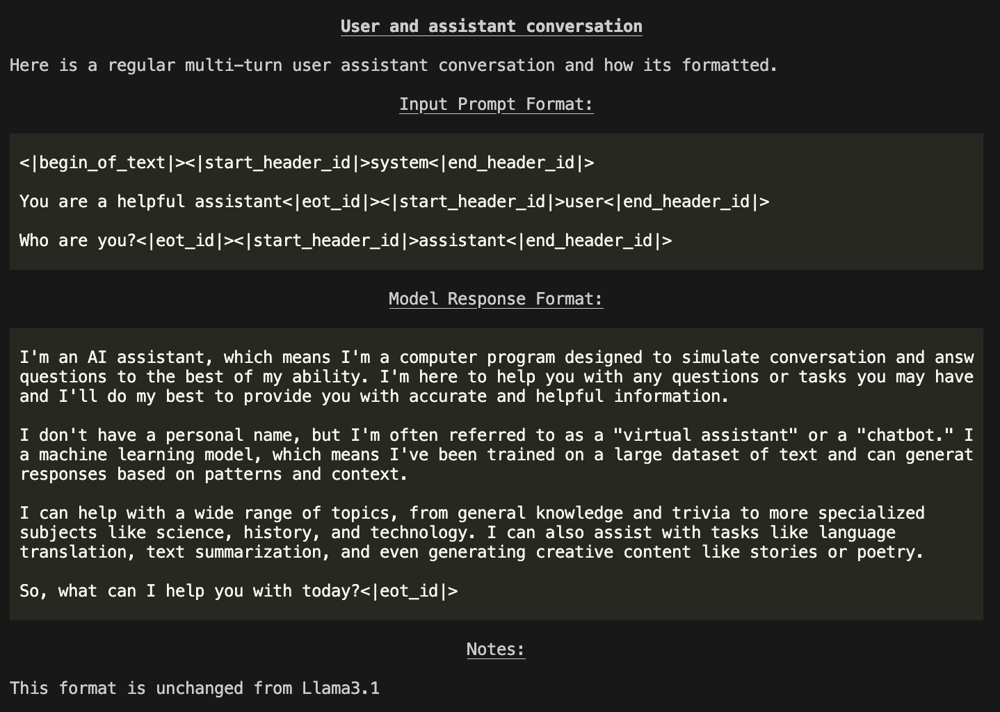

llama (server-side) CLI Reference
The llama CLI tool helps you set up and use the Llama Stack. The CLI is available on your path after installing the llama-stack package.
Installation
You have two ways to install Llama Stack:
Install as a package: You can install the repository directly from PyPI by running the following command:
pip install llama-stack
Install from source: If you prefer to install from the source code, follow these steps:
mkdir -p ~/local cd ~/local git clone git@github.com:meta-llama/llama-stack.git conda create -n myenv python=3.10 conda activate myenv cd llama-stack $CONDA_PREFIX/bin/pip install -e .
llama subcommands
download: Supports downloading models from Meta or Hugging Face. Downloading modelsmodel: Lists available models and their properties. Understanding modelsstack: Allows you to build a stack using thellama stackdistribution and run a Llama Stack server. You can read more about how to build a Llama Stack distribution in the Build your own Distribution documentation.
Sample Usage
llama --help
usage: llama [-h] {download,model,stack} ...
Welcome to the Llama CLI
options:
-h, --help show this help message and exit
subcommands:
{download,model,stack}
Downloading models
You first need to have models downloaded locally.
To download any model you need the Model Descriptor. This can be obtained by running the command
llama model list
You should see a table like this:
+----------------------------------+------------------------------------------+----------------+
| Model Descriptor(ID) | Hugging Face Repo | Context Length |
+----------------------------------+------------------------------------------+----------------+
| Llama3.1-8B | meta-llama/Llama-3.1-8B | 128K |
+----------------------------------+------------------------------------------+----------------+
| Llama3.1-70B | meta-llama/Llama-3.1-70B | 128K |
+----------------------------------+------------------------------------------+----------------+
| Llama3.1-405B:bf16-mp8 | meta-llama/Llama-3.1-405B | 128K |
+----------------------------------+------------------------------------------+----------------+
| Llama3.1-405B | meta-llama/Llama-3.1-405B-FP8 | 128K |
+----------------------------------+------------------------------------------+----------------+
| Llama3.1-405B:bf16-mp16 | meta-llama/Llama-3.1-405B | 128K |
+----------------------------------+------------------------------------------+----------------+
| Llama3.1-8B-Instruct | meta-llama/Llama-3.1-8B-Instruct | 128K |
+----------------------------------+------------------------------------------+----------------+
| Llama3.1-70B-Instruct | meta-llama/Llama-3.1-70B-Instruct | 128K |
+----------------------------------+------------------------------------------+----------------+
| Llama3.1-405B-Instruct:bf16-mp8 | meta-llama/Llama-3.1-405B-Instruct | 128K |
+----------------------------------+------------------------------------------+----------------+
| Llama3.1-405B-Instruct | meta-llama/Llama-3.1-405B-Instruct-FP8 | 128K |
+----------------------------------+------------------------------------------+----------------+
| Llama3.1-405B-Instruct:bf16-mp16 | meta-llama/Llama-3.1-405B-Instruct | 128K |
+----------------------------------+------------------------------------------+----------------+
| Llama3.2-1B | meta-llama/Llama-3.2-1B | 128K |
+----------------------------------+------------------------------------------+----------------+
| Llama3.2-3B | meta-llama/Llama-3.2-3B | 128K |
+----------------------------------+------------------------------------------+----------------+
| Llama3.2-11B-Vision | meta-llama/Llama-3.2-11B-Vision | 128K |
+----------------------------------+------------------------------------------+----------------+
| Llama3.2-90B-Vision | meta-llama/Llama-3.2-90B-Vision | 128K |
+----------------------------------+------------------------------------------+----------------+
| Llama3.2-1B-Instruct | meta-llama/Llama-3.2-1B-Instruct | 128K |
+----------------------------------+------------------------------------------+----------------+
| Llama3.2-3B-Instruct | meta-llama/Llama-3.2-3B-Instruct | 128K |
+----------------------------------+------------------------------------------+----------------+
| Llama3.2-11B-Vision-Instruct | meta-llama/Llama-3.2-11B-Vision-Instruct | 128K |
+----------------------------------+------------------------------------------+----------------+
| Llama3.2-90B-Vision-Instruct | meta-llama/Llama-3.2-90B-Vision-Instruct | 128K |
+----------------------------------+------------------------------------------+----------------+
| Llama-Guard-3-11B-Vision | meta-llama/Llama-Guard-3-11B-Vision | 128K |
+----------------------------------+------------------------------------------+----------------+
| Llama-Guard-3-1B:int4-mp1 | meta-llama/Llama-Guard-3-1B-INT4 | 128K |
+----------------------------------+------------------------------------------+----------------+
| Llama-Guard-3-1B | meta-llama/Llama-Guard-3-1B | 128K |
+----------------------------------+------------------------------------------+----------------+
| Llama-Guard-3-8B | meta-llama/Llama-Guard-3-8B | 128K |
+----------------------------------+------------------------------------------+----------------+
| Llama-Guard-3-8B:int8-mp1 | meta-llama/Llama-Guard-3-8B-INT8 | 128K |
+----------------------------------+------------------------------------------+----------------+
| Prompt-Guard-86M | meta-llama/Prompt-Guard-86M | 128K |
+----------------------------------+------------------------------------------+----------------+
| Llama-Guard-2-8B | meta-llama/Llama-Guard-2-8B | 4K |
+----------------------------------+------------------------------------------+----------------+
To download models, you can use the llama download command.
Downloading from Meta
Here is an example download command to get the 3B-Instruct/11B-Vision-Instruct model. You will need META_URL which can be obtained from here
Download the required checkpoints using the following commands:
# download the 8B model, this can be run on a single GPU
llama download --source meta --model-id Llama3.2-3B-Instruct --meta-url META_URL
# you can also get the 70B model, this will require 8 GPUs however
llama download --source meta --model-id Llama3.2-11B-Vision-Instruct --meta-url META_URL
# llama-agents have safety enabled by default. For this, you will need
# safety models -- Llama-Guard and Prompt-Guard
llama download --source meta --model-id Prompt-Guard-86M --meta-url META_URL
llama download --source meta --model-id Llama-Guard-3-1B --meta-url META_URL
Downloading from Hugging Face
Essentially, the same commands above work, just replace --source meta with --source huggingface.
llama download --source huggingface --model-id Llama3.1-8B-Instruct --hf-token <HF_TOKEN>
llama download --source huggingface --model-id Llama3.1-70B-Instruct --hf-token <HF_TOKEN>
llama download --source huggingface --model-id Llama-Guard-3-1B --ignore-patterns *original*
llama download --source huggingface --model-id Prompt-Guard-86M --ignore-patterns *original*
Important: Set your environment variable HF_TOKEN or pass in --hf-token to the command to validate your access. You can find your token at https://huggingface.co/settings/tokens.
Tip: Default for
llama downloadis to run with--ignore-patterns *.safetensorssince we use the.pthfiles in theoriginalfolder. For Llama Guard and Prompt Guard, however, we need safetensors. Hence, please run with--ignore-patterns originalso that safetensors are downloaded and.pthfiles are ignored.
List the downloaded models
To list the downloaded models with the following command:
llama model list --downloaded
You should see a table like this:
┏━━━━━━━━━━━━━━━━━━━━━━━━━━━━━━━━━━━━━━━━━┳━━━━━━━━━━┳━━━━━━━━━━━━━━━━━━━━━┓
┃ Model ┃ Size ┃ Modified Time ┃
┡━━━━━━━━━━━━━━━━━━━━━━━━━━━━━━━━━━━━━━━━━╇━━━━━━━━━━╇━━━━━━━━━━━━━━━━━━━━━┩
│ Llama3.2-1B-Instruct:int4-qlora-eo8 │ 1.53 GB │ 2025-02-26 11:22:28 │
├─────────────────────────────────────────┼──────────┼─────────────────────┤
│ Llama3.2-1B │ 2.31 GB │ 2025-02-18 21:48:52 │
├─────────────────────────────────────────┼──────────┼─────────────────────┤
│ Prompt-Guard-86M │ 0.02 GB │ 2025-02-26 11:29:28 │
├─────────────────────────────────────────┼──────────┼─────────────────────┤
│ Llama3.2-3B-Instruct:int4-spinquant-eo8 │ 3.69 GB │ 2025-02-26 11:37:41 │
├─────────────────────────────────────────┼──────────┼─────────────────────┤
│ Llama3.2-3B │ 5.99 GB │ 2025-02-18 21:51:26 │
├─────────────────────────────────────────┼──────────┼─────────────────────┤
│ Llama3.1-8B │ 14.97 GB │ 2025-02-16 10:36:37 │
├─────────────────────────────────────────┼──────────┼─────────────────────┤
│ Llama3.2-1B-Instruct:int4-spinquant-eo8 │ 1.51 GB │ 2025-02-26 11:35:02 │
├─────────────────────────────────────────┼──────────┼─────────────────────┤
│ Llama-Guard-3-1B │ 2.80 GB │ 2025-02-26 11:20:46 │
├─────────────────────────────────────────┼──────────┼─────────────────────┤
│ Llama-Guard-3-1B:int4 │ 0.43 GB │ 2025-02-26 11:33:33 │
└─────────────────────────────────────────┴──────────┴─────────────────────┘
Understand the models
The llama model command helps you explore the model’s interface.
download: Download the model from different sources. (meta, huggingface)list: Lists all the models available for download with hardware requirements for deploying the models.prompt-format: Show llama model message formats.describe: Describes all the properties of the model.
Sample Usage
llama model <subcommand> <options>
llama model --help
usage: llama model [-h] {download,list,prompt-format,describe,verify-download,remove} ...
Work with llama models
options:
-h, --help show this help message and exit
model_subcommands:
{download,list,prompt-format,describe,verify-download,remove}
Describe
You can use the describe command to know more about a model:
llama model describe -m Llama3.2-3B-Instruct
+-----------------------------+----------------------------------+
| Model | Llama3.2-3B-Instruct |
+-----------------------------+----------------------------------+
| Hugging Face ID | meta-llama/Llama-3.2-3B-Instruct |
+-----------------------------+----------------------------------+
| Description | Llama 3.2 3b instruct model |
+-----------------------------+----------------------------------+
| Context Length | 128K tokens |
+-----------------------------+----------------------------------+
| Weights format | bf16 |
+-----------------------------+----------------------------------+
| Model params.json | { |
| | "dim": 3072, |
| | "n_layers": 28, |
| | "n_heads": 24, |
| | "n_kv_heads": 8, |
| | "vocab_size": 128256, |
| | "ffn_dim_multiplier": 1.0, |
| | "multiple_of": 256, |
| | "norm_eps": 1e-05, |
| | "rope_theta": 500000.0, |
| | "use_scaled_rope": true |
| | } |
+-----------------------------+----------------------------------+
| Recommended sampling params | { |
| | "temperature": 1.0, |
| | "top_p": 0.9, |
| | "top_k": 0 |
| | } |
+-----------------------------+----------------------------------+
Prompt Format
You can even run llama model prompt-format see all of the templates and their tokens:
llama model prompt-format -m Llama3.2-3B-Instruct

You will be shown a Markdown formatted description of the model interface and how prompts / messages are formatted for various scenarios.
NOTE: Outputs in terminal are color printed to show special tokens.
Remove model
You can run llama model remove to remove an unnecessary model:
llama model remove -m Llama-Guard-3-8B-int8